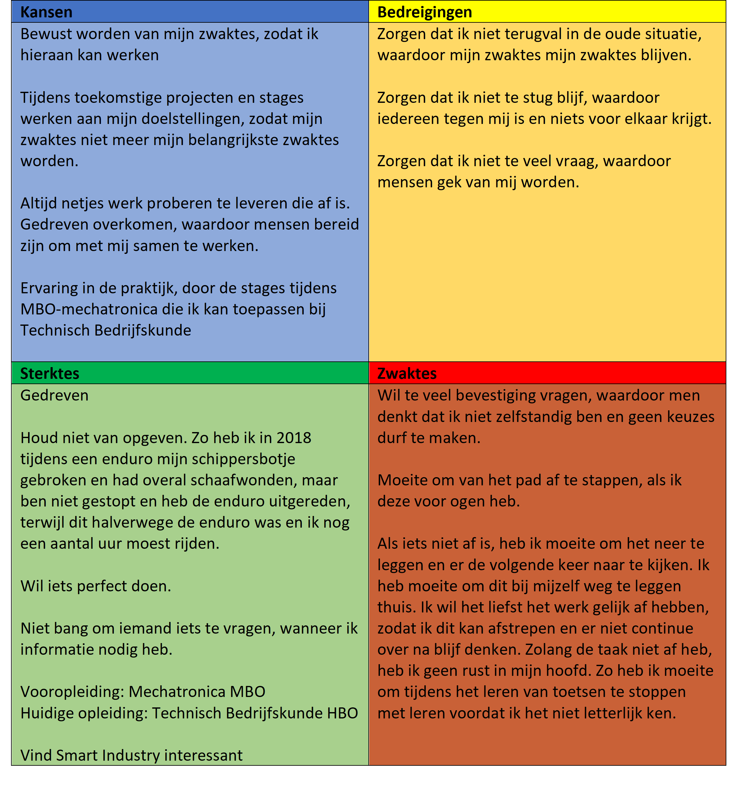

Smart Me
Naam: Jan-Willem Arendsen, Datum: 22-09-2020

Introductie
Naast het werken aan Smart Industry, is het belangrijk om te werken aan je professionele ontwikkeling. Daarom zijn er een aantal persoonlijke doelstellingen geformuleerd, waaraan ik tijdens deze minor wil werken. Daarnaast staan er een paar doelstellingen, die gedurende mijn opleiding gelden. Deze heb ik meegenomen, omdat deze minor ook onderdeel van mijn opleiding is. Voor het opstellen van de doelstellingen heb ik eerst een SWOT-analyse uitgevoerd, waarin ik mijn sterktes, zwaktes, kansen en bedreigingen benoemd heb. Vervolgens staan mijn doelstellingen beschreven.
SWOT-analyse
Voordat er doelstellingen geformuleerd kunnen worden, moet er eerst een analyse uitgevoerd worden. Een handig hulpmiddel om een analyse over jezelf uit te voeren is een SWOT-analyse. Een SWOT-analyse is een handig hulpmiddel voor een strategische planning en strategisch management. SWOT staat voor Strengths (sterktes), Weakness (Zwaktes), Opportunities (Kansen) en Threats (Bedreigingen) (Gürel & TAT, 2017).
{kind=link}
Doelstellingen
Na het uitvoeren van de SWOT-analyse zijn ontwikkeldoelen opgesteld, samen met een stappenplan hoe de doelen behaald kunnen worden. Zie de afbeelding hieronder de doelstellingen, samen met de acties, het resultaat en de stappen die gevolgd kunnen worden.
Doelstellingen geformuleerd:
- Ik wil zelfstandiger worden. Op dit moment heb ik de neiging om voor veel dingen die ik doe eerst bevestiging te vragen voordat ik dit uitvoer. Dit wil ik verminderen en daardoor meer zelfstandig overkomen. Ik wil zelfstandiger worden door eerst iets zelf te proberen en niet eerst om bevestiging te vragen. Deze doelstelling wil ik behalen door tijdens stage 2 niet meer dit als tip mee te krijgen tijdens beoordeling.
- Voor de afstudeerstage wil ik flexibeler worden. Als het plan wijzigt, heb ik vaak moeite om mijzelf gelijk aan te passen aan de nieuwe situatie. Ik wil voor de afstudeerstage hier beter om kunnen gaan met wijzigingen door mijn gedrag zelf te evalueren telkens na een nieuwe situatie. Als ik zelf vind dat mijn reactie minder is voor het afstuderen is het doel behaald.
- Voor het einde van de minor wil ik een eigen website bouwen. Het lijkt mij zeer interessant om de programmeertaal achter een website te snappen. Ik wil voor het einde van de minor dit weten en met die kennis een eigen website opbouwen waarin onder andere mijn portfolio staat, door de informatie uit Smart Connection toe te passen.
- Voor het einde van de minor wil ik meer ervaring krijgen over automatisering en technologieën op het gebied van Smart Industry. Door deskresearch te doen over de verschillende technologieën op het gebied van Smart Industry en door dit in de praktijk toe te passen wil ik het doel bereiken. Deze ervaring wil ik toe passen in de toekomst, om mijzelf te kunnen specialiseren naar een Technisch Bedrijfskundige met meer technische achtergrond.